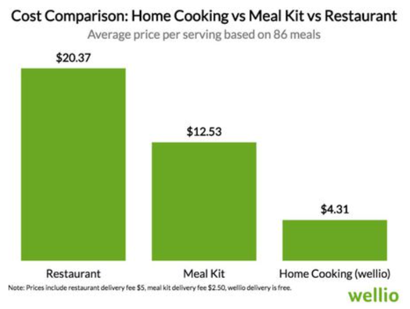
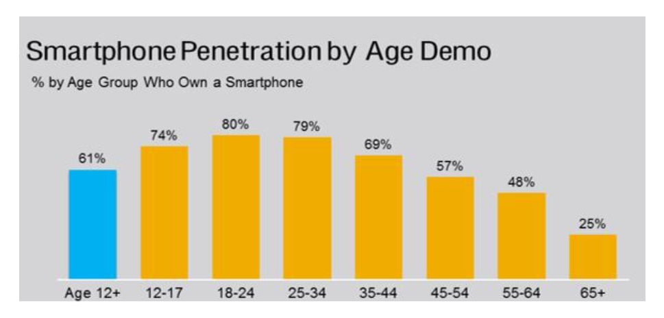
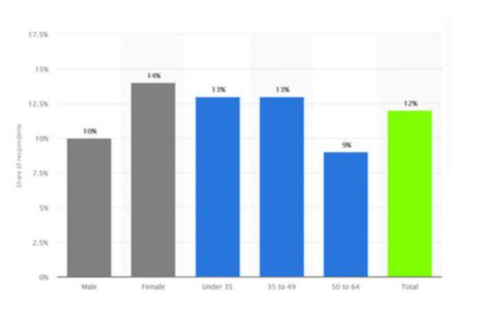

Recipe
Generator
- Methods: User Research, Persona Development
- Tools: Figma
- Duration: 2 weeks
- Project Type: Individual
Context
People are often looking for ways to eat food that is cheap yet healthy. Buying healthy food outside is usually very expensive and cheap foods are usually not healthy and include junk food. The cheapest way to eat healthy is to cook at home with your own groceries. Young people like students or bachelors living alone can have a hard time eating proper meals due to busy lifestyles and budget problems. Busy lifestyles can lead to people not being able to go grocery shopping very often and budget problems can lead to people buying limited number of groceries and limited variety of groceries. Furthermore, even with groceries at home, not a lot of youngsters know how to cook proper meals and often resort to low effort microwavable packet meals.
Objective
The objective of this project is to design a recipe generator application to be used by university students and young bachelors / bachelorettes living alone to help them find a variety of recipes based on their current ingredients at home.
Usability Goals
Effective to Use
This app/website should be successful in fulfilling the users' needs and desires. These include providing a variety of recipes and providing healthy recipes that constitute as a proper meal. It should be a reliable source for young people to be able to make their own meals. The effectiveness of the product can be measured by the number of users / newly acquired users, and the ratio of people making their meals at home vs buying food outside.
Easy to Learn
This app/website should be simple in its user interface and easy to learn even by people who are not technology savvy. It should be relatively simple since the user main task is the selection of ingredients. The recipes itself should be simple to make as well and require low effort and time. This can be measured by the time it takes for users to complete the tasks with the product and the error rates while performing the task.
Has Good Utility
This app/website will have good utility if it serves the users' needs and is useful to them. It should be able to perform its primary functions and objectives. This can be measured by the variety of recipes that users can make with their selection of ingredients, the calories and nutrients breakdown to determine if it's a healthy meal, and if they are able to make meals with limited ingredients without going grocery shopping too often.
UX Goals
My protocol for producing the UX goals was to use the Microsoft Desirability Toolkit. I made a list of desirable and undesirable reactions that I would or wouldn't want the users to feel. Based on that I then constructed my UX goals.
- Users should feel supported by the product and feel stress-free when using it to make their meals. This can be measured by the number of users that select 'supported' as a reaction word.
- Users should enjoy using the product and have a fun experience while using it and making food. This can be measured by the number of users that select 'fun' as a reaction word.
- Users should find the product appealing and easy to use in terms of selecting ingredients and navigating through recipes. This can be measure by the number of users that select 'easy to use' or 'appealing' as reaction words.
Persona Development
Secondary Research
My main sources for doing secondary research were news articles and websites. The snippets below were used to verify or falsify my assumptions.
A survey at Temple University and Wisconsin HOPE Lab showed that more than a third of students struggle with food habits and that 36% of college students do not have enough to eat. A reason for this is that more low-income students are going to colleges now and this has contributed to the increase in food insecurities amongst students.
This verifies my assumption that college students do have poor food habits and have a low budget for food amongst many other things. This survey was only done in one university in USA and cannot necessarily be applied to all students across the globe especially since USA in general has differing food habits than other countries including Canada. Therefore, more research was needed in this category to verify this assumption.
A study by Sam Abraham et.al found that college students tended to select food according to convenience, taste, time, and price, rather than nutritional values. First year students tend to gain weight due to changes in physical environments which include dietary intake and change in food habits. Men and women faced different barriers. While men's barriers were limited access to healthier foods and large work overload, women reported lack of time to eat healthy and stress.
This shows certain characteristics of students such as being busy with school workload and stress and not having time which can infer that they do not have time to go grocery shopping on a regular basis. They are also less exposed to healthier foods and likely more exposed to fast-food places. This change of environment from being dependent on parents in high school to being independent in college affects them physically and mentally. This study also confirms students needs and desires which include prioritizing convenience, taste, time, and price, and that they usually are not able to prioritize nutritional value and health as much as they would like to. Along with my previous resource, this also confirms that students tend to have poor food habits.
Using Food Service Director, I was able to find the following statistics on college students food habits and purchases.
- 25% students follow a type of diet (vegetarian, vegan, etc)
- 60% students say they are more likely to purchase late night snacks off campus
- 18% students say they are more likely to purchase late night snacks on campus
- 47% students agree they visit off campus restaurants more often on the weekend than the weekdays
- 17% students who live off campus participate in a meal plan
The above statistics show many students tend to purchase food off campus at restaurants and convenience stores whether it is for lunch / dinner or late-night snacks. Not many students participate in a meal plan which would actually be better than buying outside food since it would be healthier and provide more nutrition value. There are also a considerable number of students who follow a dietary restriction such as not eating meat and these meals are more expensive when bought outside than meat-based food from fast food restaurants. Therefore, for these users, buying ingredients and making food themselves is more cost effective than prepared foods.

An article by Forbes shows how much money can be saved by cooking at home and why it is something bachelors prefer. Not only can you use healthier ingredients, but you can also set portions to a reasonable size. An analysis was done on recipe data to find the true cost of making a meal from scratch compared to a restaurant delivery or meal kit. Data was analyzed from 'wellio', an ingredients price breakdown platform. They looked at the average cost per serving of cook from scratch to the cost of a serving from a restaurant or meal kit delivery service. Results showed on average it is five times more expensive to order delivery than to cook at home and meal kits are three times more expensive.
This article looked at cost and not time. This is something that bachelors care about since they are more affected by the costs than the time it takes. Especially for lower income individuals who want to cook to save money but simply do not know how. By selecting affordable ingredients of their choice when going grocery shopping, they can find a variety of recipes by using this product and save costs up to five times. This is useful because they can save portions and take it to work the next day too.

The first graph above shows smartphone usage by age demographics. My assumption was that students under the age of 24 would be more tech savvy than young bachelors over the age of 24. However, the difference between the two groups is only 1% and this confirms that both groups are equally tech savvy. The second graph above shows the usage penetration of food and cooking apps among age and gender demographics. Females are more likely to use cooking apps than males. However, my assumption that more people under the age of 30 would use this product was wrong since people from 35-49 use apps like these just as much.
Modified Fly-On-The-Wall
I used a modified fly-on-the-wall technique since I did not directly observe peoples' behaviors in person, instead I looked through forums like Quora and Reddit to find peoples responses to questions related to food habits. My main searches included student and bachelor struggles with food habits. Below is just one example of many of people's comments and responses from which I was able to gain a lot of relevant information for my personas.
"Bachelors eat whatever they like. I could qualify that with cost considerations, time constraints, and kitchen skills."
Questionnaire
I used Google Forms to make my questionnaire since it was easy to make, distribute to other people, and easy for others to fill out. I started by asking characteristic questions and then moving to open ended questions that required more than just yes / no answers. I was able to gain a lot of insight about users which I could use in building my personas. Some of the results are shown below.
- 75% of the users were students and 25% were bachelors
- 45% cook at home while 55% buy food
- 41% enjoy cooking all the time and 53% enjoy cooking sometimes
- While some people did not know how to cook, most of them were moderately good at cooking
- Time was more important to students because of busy schedules
- Saving money was more important to bachelors
- 66.7% said they would use a recipe generator app to fulfill their current needs and desires, 23.8% said maybe, and 9.5% said no
- When asked if they would cook more often with an app like this, 42.9% said yes, 42.9% said maybe, and 14.3% said no
Final Personas
Using methods like secondary research, fly-on-the-wall, and questionnaires, I was able to create the following two personas.
Mockup Screens
While the project focused only on persona development, I also decided to create mockup screens of what this app could look like on Figma.
.png)
.png)
.png)